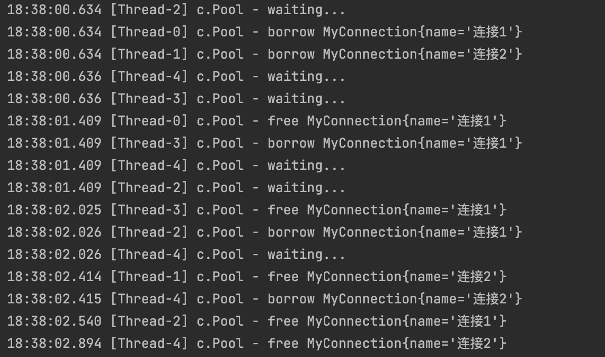

JUC-不可变类
6. 共享模型之不可变
可变类都不是线程安全的，虽然可以用synchronized加锁解决，但众所周知加锁会导致性能降低。
使用不可变类就可以保证不会出现线程安全问题。String类就是一个常见的不可变类，主要是使用final和private关键字保证它不被外界修改，同时还使用了一种称为保护性拷贝的机制。
6.1 保护性拷贝
使用字符串时，似乎也有一些修改相关的方法，比如substring：
1
2
3
4
5
| public String substring(int beginIndex) {
...
...
return (beginIndex == 0) ? this : new String(value, beginIndex, subLen);
}
|
其实substring方法的内部是调用String的构造方法创建了一个新的字符串，这个构造方法实际上是：
1
2
3
4
5
| public String(char value[], int offset, int count) {
...
...
this.value = Arrays.copyOfRange(value, offset, offset+count);
}
|
其实就是把char数组进行一个复制，产生一个新的char数组，赋值给新字符串的value属性，并没有对原来的char数组进行改动。这种通过创建副本对象来避免共享的手段就是保护性拷贝。
6.2 享元模式
很多不可变类使用到保护性拷贝，像substring这些方法，并没有修改原有的对象，而是创建了一个新的对象进行拷贝的操作。这样虽然能避免共享，保证了线程安全，但也因为频繁地创建对象导致对象太多。因此对于不可变类，通常会使用享元模式来解决。
6.2.1 享元模式的体现
在JDK中，Boolean / Byte / Short / Integer / Long / Character等包装类提供了valueOf()方法，例如Long的valueOf会缓存-128~127之间的Long对象，在这个范围之内会复用对象，大于这个范围才会新建Long对象：
1
2
3
4
5
6
7
| public static Long valueOf(long l) {
final int offset = 128;
if (l >= -128 && l <= 127) {
return LongCache.cache[(int)l + offset];
}
return new Long(l);
}
|
6.2.2 实现自定义连接池
一个线上商城应用，每秒查询率QPS达到数千，如果每次请求都要重新创建和关闭数据库连接，性能会受到极大影响。这时预先创建好一批连接，放入连接池，请求到达后，从连接池获取连接，使用完毕后再还给连接池。这样既节约了连接的创建和关闭时间，又实现了连接的复用，不至于让庞大的连接数压垮数据库。
1
2
3
4
5
6
7
8
9
10
11
12
13
14
15
16
17
18
19
20
21
22
23
24
25
26
27
28
29
30
31
32
33
34
35
36
37
38
39
40
41
42
43
44
45
46
47
48
49
50
51
52
53
54
| @Slf4j(topic = "c.Pool")
class Pool{
private final int poolSize;
private Connection[] connections;
private AtomicIntegerArray states;
public Pool(int poolSize) {
this.poolSize = poolSize;
this.connections = new Connection[poolSize];
this.states = new AtomicIntegerArray(new int[poolSize]);
for (int i = 0; i < poolSize; i++) {
connections[i] = new MyConnection("连接"+(i+1));
}
}
public Connection borrow(){
while (true){
for (int i = 0; i < poolSize; i++) {
if (states.get(i) == 0) {
if (states.compareAndSet(i,0,1)) {
log.debug("borrow {}",connections[i]);
return connections[i];
}
}
}
synchronized (this){
try {
log.debug("waiting...");
this.wait();
} catch (InterruptedException e) {
e.printStackTrace();
}
}
}
}
public void free(Connection connection){
for (int i = 0; i < poolSize; i++) {
if (connections[i] == connection) {
states.set(i,0);
synchronized (this){
log.debug("free {}",connection);
this.notifyAll();
}
break;
}
}
}
}
|
1
2
3
4
5
6
7
8
9
|
class MyConnection implements Connection{
private String name;
public MyConnection(String name) {
this.name = name;
}
}
|
1
2
3
4
5
6
7
8
9
10
11
12
13
14
15
16
17
|
public static void main(String[] args){
Pool pool = new Pool(2);
for (int i = 0; i < 5; i++) {
new Thread(()->{
Connection conn = pool.borrow();
try {
Thread.sleep(new Random().nextInt(2000));
} catch (InterruptedException e) {
e.printStackTrace();
}finally {
pool.free(conn);
}
}).start();
}
}
|
输出：

6.3 无状态
在学习web时，为了保证Servlet的线程安全，都建议不要为Servlet设置成员变量，因为没有任何成员变量的类是线程安全的。因为成员变量保存的数据也可以称为状态信息，因此没有成员变量就称之为无状态。